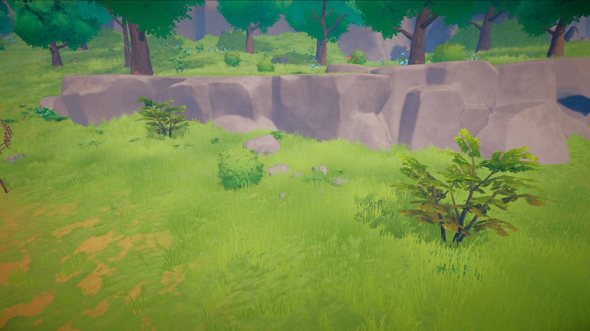
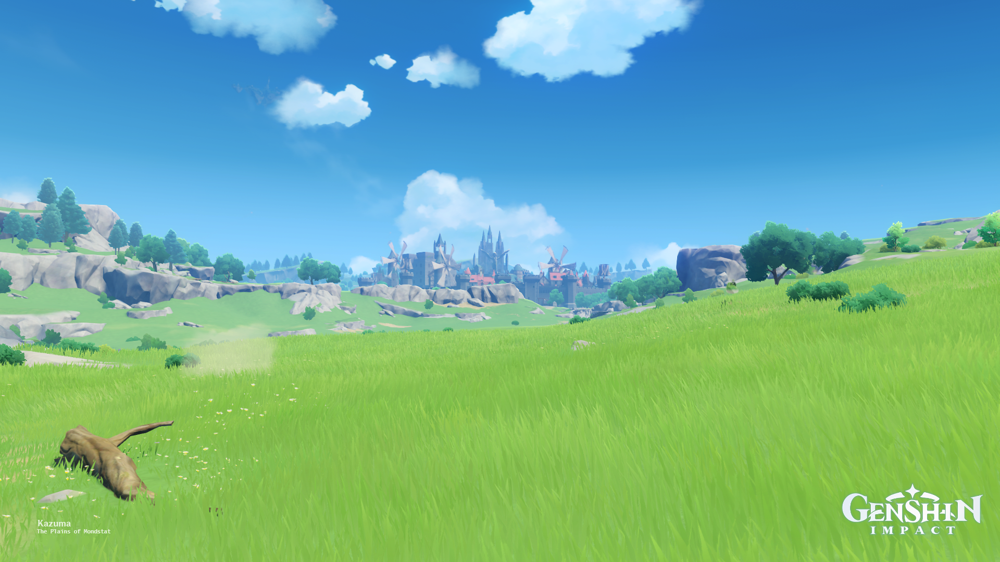
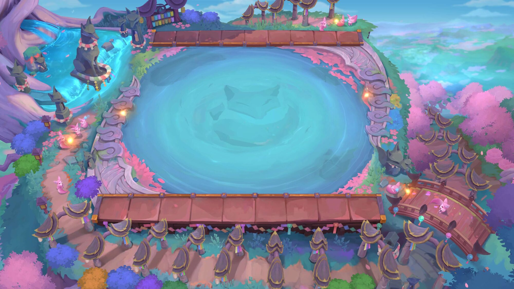
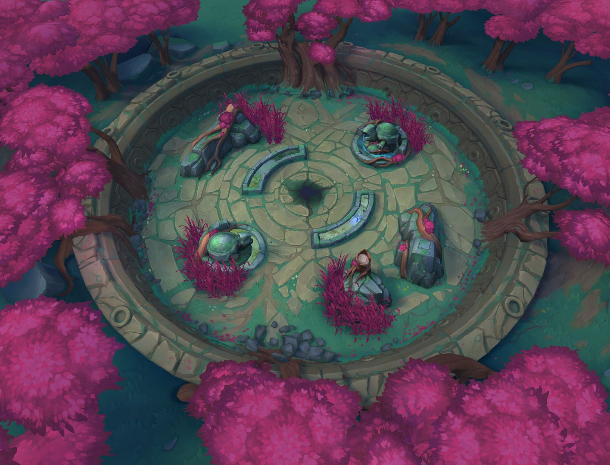
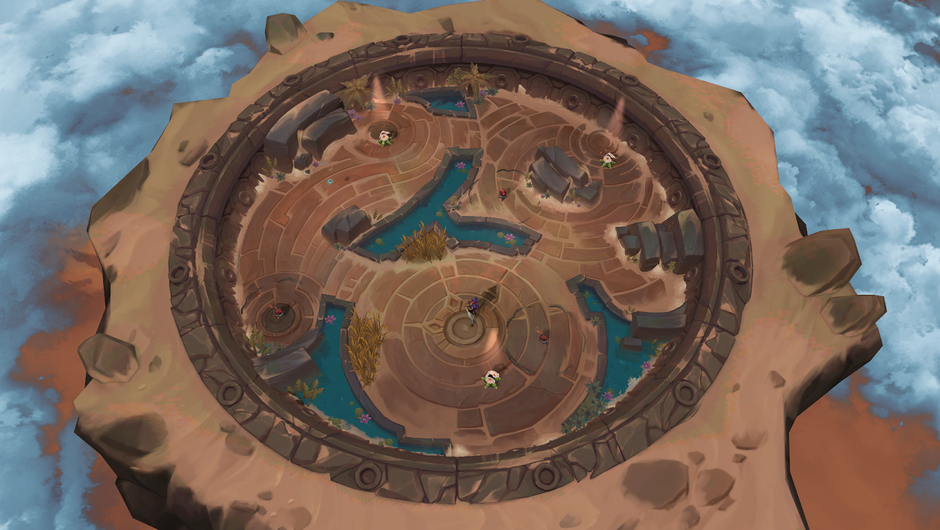
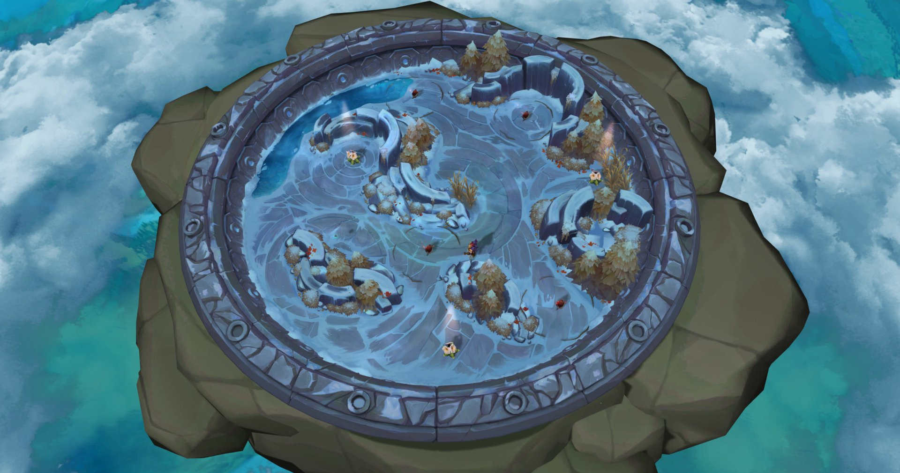

大面积空地：开阔，但地面有层次
这一页专门选草坪、草土空地与大片战斗地面。请按正常游戏视角关注地面变化，暂时忽略场地边缘的建筑装饰。图片保留原貌，来源与类型分别标明。
这些是外观参考，尚未核对其原始材质能否在项目中使用。其他游戏与 Unity 的截图用于选择方向；选定后优先用现有 Dota 资源实现所需效果，缺失部分再制作独立资源。
D1 · 开阔草坪 · Anemo 场景资源演示
Unity 资源包演示图，仅作外观参考 · 来源看大面积草地的冷暖变化、不同密度的草、少量裸露地面。建筑和树木退到边缘，中央仍然开阔。

D1 · 点击放大 · 原图D2 · 起伏草甸 · 原神蒙德原野
HoYoLAB 玩家实机截图；第三人称视角 · 来源看连续的大块草色、稀疏花草与远近层次。只参考色彩和疏密，高草密度与地势不能直接照搬到俯视战斗场地。

D2 · 点击放大 · 原图E1 · 中央留白 · TFT 灵魂莲华场地
游戏场地展示图，来自 Mobalytics · 来源看中央连续的开阔地面如何通过大尺度纹样和材质变化获得细节；桃花、建筑与水景集中在场地外围。适合讨论主城或大挑战房的留白。

E1 · 点击放大 · 原图E2 · 旧石与苔草 · LoL Arena
Riot 官方场地展示图 · 来源看低对比石纹、裂缝和苔草如何共同组成大片地面。此图中央有障碍，借鉴地面处理即可，不照搬障碍布局。

E2 · 点击放大 · 原图F1 · 开阔旧石平台 · LoL Arena
游戏场地展示图，来自 AltChar · 来源看大块旧石地面、环形纹理和少量苔草形成的变化。重点观察三个开阔平台内部，布局和外围构筑物仅作背景。

F1 · 点击放大 · 原图F2 · 冰雪战斗空地 · LoL Arena
竞技场展示图转载，来自 Wallpaper Abyss · 来源看浅色空地里的冰裂纹、深浅冰色、积雪和边缘岩石。适合讨论冰雪练功房，中央仍保留大面积活动空间。

F2 · 点击放大 · 原图选择时看这四点
① 大面积地面有没有连续的深浅变化；② 草、土、石是否相互穿插；③ 细节有没有疏密，而非均匀撒满；④ 去掉周围建筑后，地面本身是否仍然好看。主岛样板优先验证这四点，树木、花丛和小建筑随后再加。
返回上一组地形参考